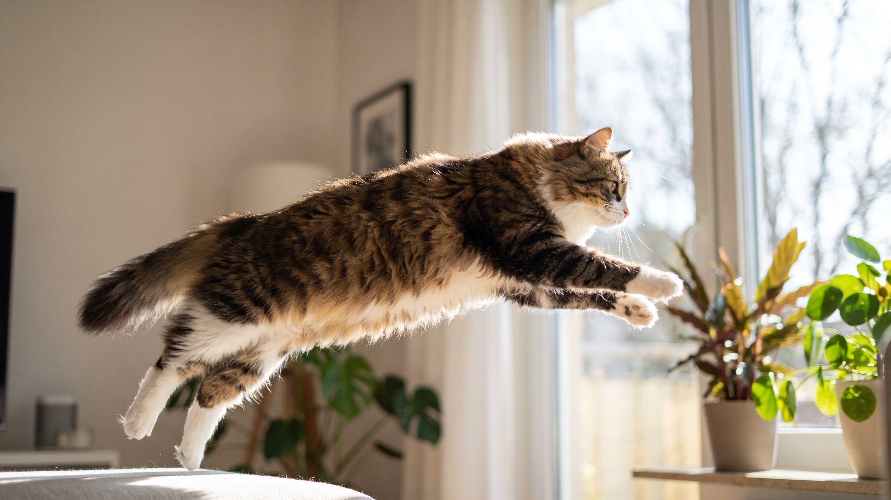

Немецкая длинношёрстная кошка обычно спокойна и добродушна, но её шерсть с подшёрстком требует регулярного внимания владельца. Пропуски быстрее всего заметны за ушами, на воротнике и задних лапах. Здесь даны режим игры, выбор инструментов, порядок вычёсывания и список зон для проверки.
🐾 Всё о вашем питомце — в одном приложении
AI-ветеринар, дневник здоровья, напоминания об уходе и прививках. Бесплатно, в Telegram и MAX.
Установить AnimaLife → Открыть в MAX →
У вас iPhone? AnimaLife есть в App Store
Породный стандарт описывает немецкую длинношёрстную кошку как уравновешенную, спокойную и добродушную. Конкретный питомец всё же сохраняет свои привычки: одна кошка охотно сидит рядом с человеком, другая чаще выбирает отдельную лежанку. Знакомство с животным и условия в доме говорят о будущем быте больше, чем общие обещания о характере.
Спокойный темперамент не отменяет ежедневную активность. Предложите короткую игру с удочкой до кормления и оставьте время для самостоятельного обследования комнат. Кошке полезно выбирать между лежанкой у людей и уединённым местом. Постоянный порядок кормления, игры и отдыха упрощает привыкание к расчёсыванию.
Уход начинается с спокойного обращения. Приучайте к касаниям постепенно: сначала несколько движений по спине, затем осмотр боков и лап. Заканчивайте процедуру до явного раздражения. Если кошка уходит, продолжите позже вместо удержания силой.
Устойчивый комплекс с платформами или закреплённые полки дают кошке обзор и возможность подняться над бытовой суетой. Это полезное обогащение дома, хотя стандарт не задаёт особую породную норму для высоты конструкции. Проверьте, что ступени выдерживают вес питомца, а длинная шерсть не цепляется за открытые крепления.
Рядом поставьте когтеточку с устойчивым основанием. Для игры выбирайте маршрут без скользких участков и закрытых узких промежутков, где кошка может застрять. Два коротких подхода в день легче поддерживать, чем редкие долгие занятия. После активной игры оставьте кошку в покое и проверьте, доступна ли ей вода.
Шерсть у породы длинная или полудлинная, с подшёрстком и удлинёнными участками на воротнике и задних лапах. Подготовьте металлический гребень с закруглёнными зубьями и мягкую пуходёрку. Гребень помогает проверить шерсть до кожи, пуходёрка собирает выпавшие волосы на поверхности. Инструмент должен проходить без царапания.
Начните со спины и боков, разделяя шерсть рукой на небольшие пряди. Затем осторожно пройдите грудь, воротник, живот и задние лапы. Гребень не должен застревать в пряди. Если он остановился, распутайте кончик пальцами и снова продвигайтесь небольшими участками. Не тяните кожу и не разрезайте колтун возле неё.
Для начала осматривайте кошку каждую неделю и расчёсывайте по состоянию шерсти. Во время линьки процедуры обычно нужны чаще. Точный интервал зависит от густоты покрова и активности питомца: ориентиром служит свободное прохождение гребня без зацепов.
Раз в неделю удобно совместить уход с осмотром лежанки и полок. Уберите сбившуюся шерсть, промойте гребень и высушите его. Купают кошку по фактическому загрязнению. После этого шерсть промокают полотенцем, полностью высушивают и аккуратно прочёсывают, если питомец спокоен.
Распространённые ошибки: проводить пуходёркой только по верхнему слою, пропускать живот и ждать крупного колтуна. Если спутанный участок плотно прилегает к коже или кошка резко реагирует на касание, обратитесь к грумеру. После ухода шерсть разделяется на пряди без усилия, а кошка свободно двигается и умывается.
Материал носит информационный характер и не заменяет очную консультацию ветеринара.
🐾 Спросите AI-ветеринара о вашей кошки
AnimaLife отвечает на вопросы о кошках и собаках круглосуточно, ведёт дневник здоровья и напоминает о прививках. Бесплатно, без записи.
Открыть AnimaLife → Открыть в MAX →
У вас iPhone? AnimaLife есть в App Store
🐾 Понравился разбор?
Подпишитесь на канал — каждый день разбираем по одному тревожному симптому у кошек и собак: что в пределах нормы, а когда пора к врачу. Подпишитесь, чтобы не пропустить разбор, который может спасти здоровье вашего питомца.